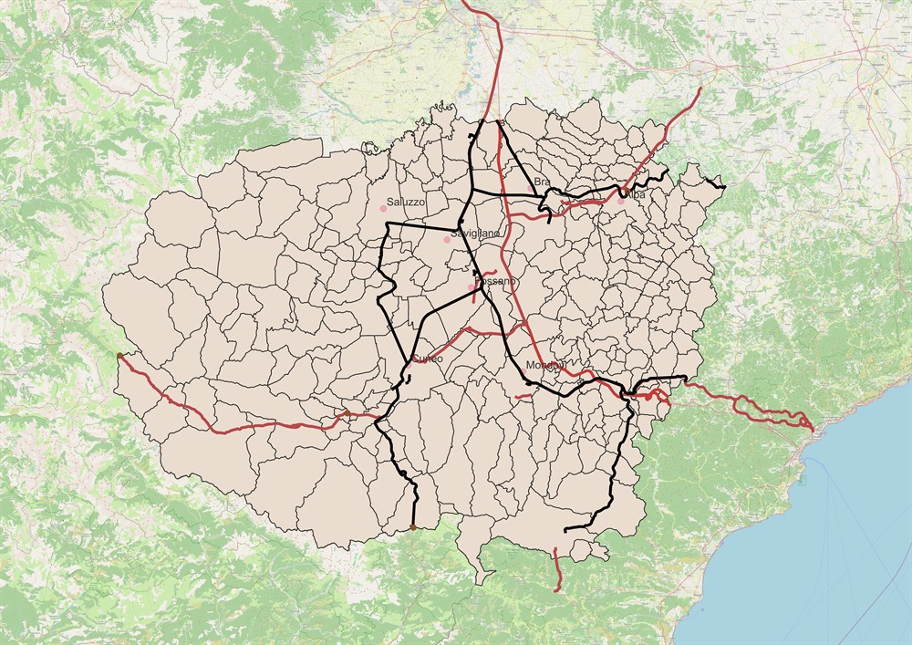

This WebGIS provides an interactive visualization of demographic and business data for the Province of Cuneo, Piedmont, Italy.
This project was developed to provide a territorial analysis tool for the Province of Cuneo.
Built with QGIS, Leaflet.js and Chart.js.
Explore Demographic, business & strategic infrastructure data across every municipality.
